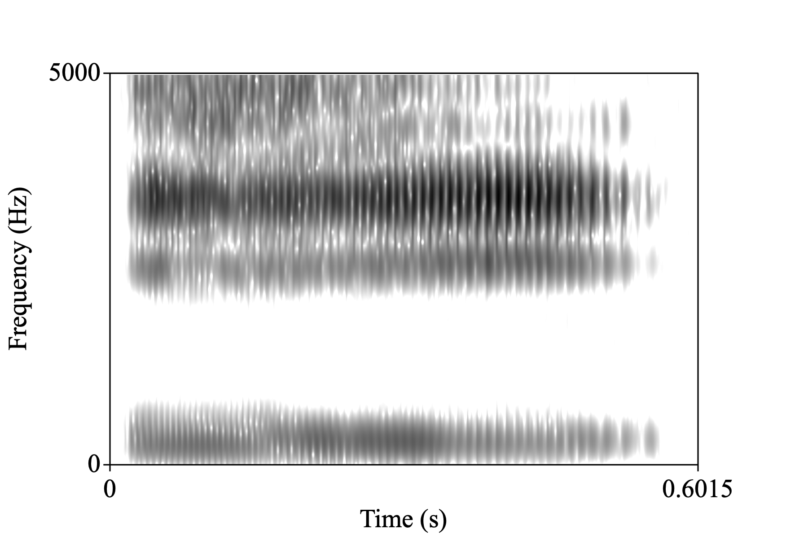
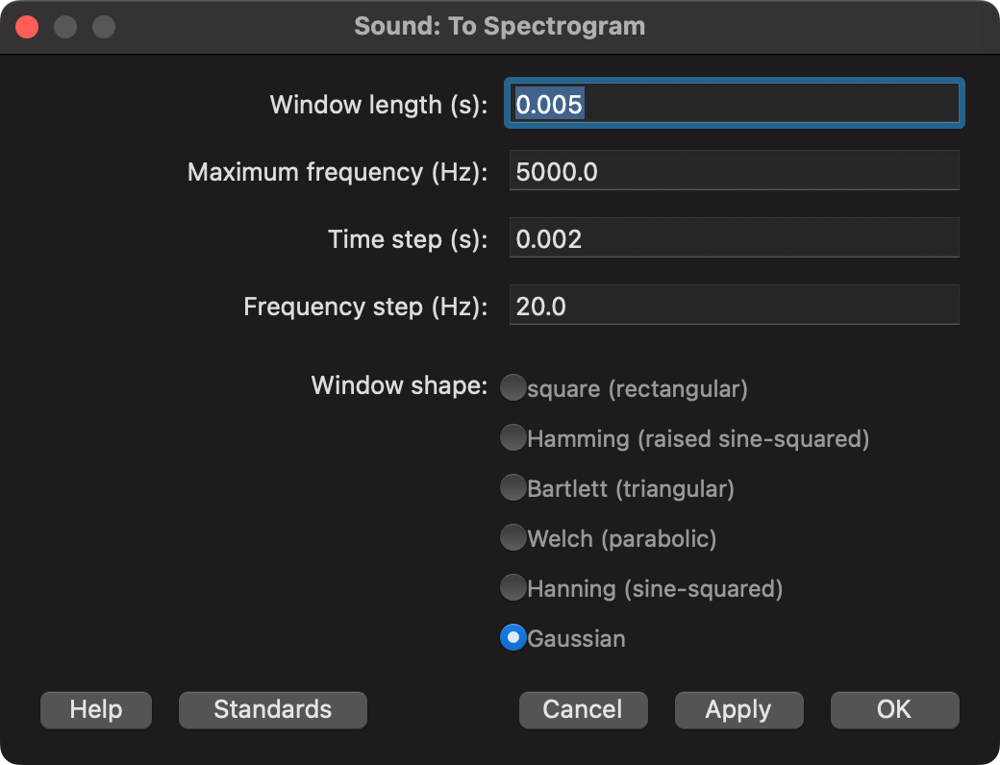
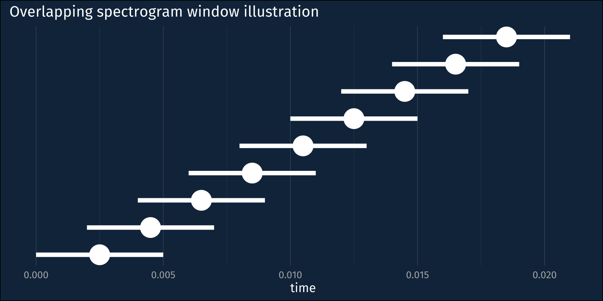
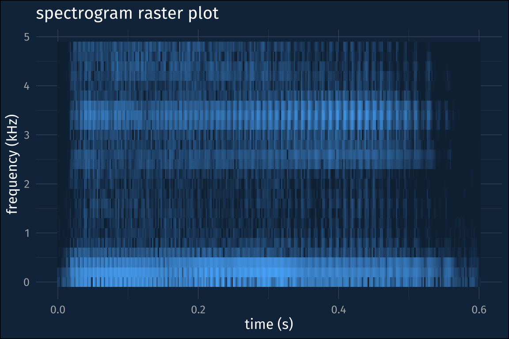
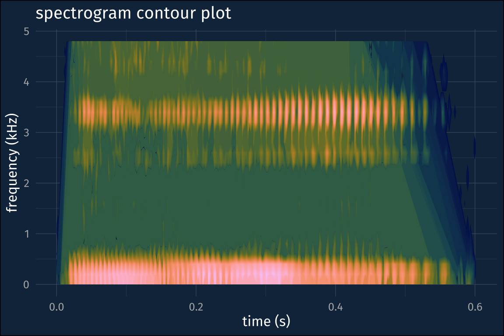

library(tuneR)
library(seewave)I might flesh this out as a more detailed tutorial for LingMethodsHub, but for now this is going to be a rough-around-the-edges post about making spectrograms in R. My goal will be to get as close as possible to recreating a spectrogram like you might get from Praat.

Pre-processing.
To keep things simple, I grabbed vowel audio clip from the Wikipedia IPA vowel chat with audio (audio info and license).
Loading the audio file
The {seewave} package, which I’m using to make the spectrogram, takes the sound objects created by {tuneR}, so that’s what I’ll use for reading in the audio file.
i_wav <- readWave("assets/Close_front_unrounded_vowel.wav")To get a sense of what information is in the wav file, you can use str()
str(i_wav)Formal class 'Wave' [package "tuneR"] with 6 slots
..@ left : int [1:26524] -2 16 42 24 33 53 56 68 51 55 ...
..@ right : num(0)
..@ stereo : logi FALSE
..@ samp.rate: int 44100
..@ bit : int 16
..@ pcm : logi TRUESince I’m going to be zooming in to 0 to 5,000 Hz on the spectrogram, I’ll downsample the audio to 10000.
i_wav_d <- downsample(i_wav, 10000)Computing the spectrogram
The function to compute the spectrogram is seewave::spectro(). Its argument names are formatted in a way I find a bit grating. A lot of them are compressed down to single characters or other abbreviations that require having the docs constantly open.
Anyway, the arguments that seem most important are:
wl-
window length in samples
wn-
window function, defaulting to Hanning
ovlp-
Window overlap, in percentage. That is, a 25% overlap between analysis windows should be passed to
ovlpas25.
Praat defaults
Let’s have a look at the Praat spectrogram defaults

Here’s a quick illustration of what these defaults correspond to. It takes an analysis window that’s 0.005 seconds long, and moves it over time by 0.002 second increments. Also, the data coming into the analysis window is weighted by a Gaussian distribution.
library(tidyverse)Plot Code
win_len <- 0.005
time_step <- 0.002
tibble(
center = seq(win_len/2, 0.02, by = time_step),
left_edge = center - (win_len/2),
right_edge = center + (win_len/2),
win_num = seq_along(center)
) |>
ggplot(aes(x = center, y = win_num))+
geom_pointrange(
aes(
xmin = left_edge,
xmax = right_edge
),
size = 2,
linewidth = 2
)+
labs(x = "time",
y = NULL,
title = "Overlapping spectrogram window illustration")+
theme(axis.text.y = element_blank(),
panel.grid.major.y = element_blank(),
panel.grid.minor.y = element_blank())
The seewave::spectro() function defines this same relationship, except instead of the time step or window hop length, we need to define by what % the windows overlap. We also need to express how wide the windows are in terms of audio sample, rather than in terms of time, but that just requires multiplying the desired time width by the sampling rate.
win_len <- 0.005 * i_wav_d@samp.rate
hop_len <- 0.002 * i_wav_d@samp.rate
overlap <- ((win_len - hop_len) / win_len) * 100The one thing that I can’t recreate for now is the Gaussian window function. {seewave} doesn’t have it implemented, so I’ll just stick with its default (Hamming)
Computing the spectrogram
Now, it’s a pretty straightforward call to spectro().
spect <-
i_wav_d |>
spectro(
# window length, in terms of samples
wl = win_len,
# window overlap
ovlp = overlap,
# don't plot the result
plot = F
)The spect object is a list with three named items
$time-
a vector corresponding to the time domain
$freq-
a vector corresponding to the frequency domain
$amp-
a matrix of amplitudes across the time and frequency domains
glimpse(spect)List of 3
$ time: num [1:299] 0 0.00202 0.00404 0.00606 0.00807 ...
$ freq: num [1:25] 0 0.2 0.4 0.6 0.8 1 1.2 1.4 1.6 1.8 ...
$ amp : num [1:25, 1:299] -35.1 -39.5 -51.3 -49.9 -51.7 ...Tidying up
In order to make a plot of the spectrogram in {ggplot2}, we need to do some tidying up. I’ll go about this by setting the row and column names of the spect$amp matrix to the frequency and time domain values, converting it to a data frame, then doing some pivoting.
# set the colnames and rownames
colnames(spect$amp) <- spect$time
rownames(spect$amp) <- spect$freqspect_df <-
spect$amp |>
# coerce the row names to a column
as_tibble(rownames = "freq") |>
# pivot to long format
pivot_longer(
# all columns except freq
-freq,
names_to = "time",
values_to = "amp"
) |>
# since they were names before,
# freq and time need conversion to numeric
mutate(
freq = as.numeric(freq),
time = as.numeric(time)
)summary(spect_df) freq time amp
Min. :0.0 Min. :0.0000 Min. :-89.94
1st Qu.:1.2 1st Qu.:0.1494 1st Qu.:-45.17
Median :2.4 Median :0.3008 Median :-35.85
Mean :2.4 Mean :0.3008 Mean :-35.43
3rd Qu.:3.6 3rd Qu.:0.4521 3rd Qu.:-26.69
Max. :4.8 Max. :0.6015 Max. : 0.00 “Dynamic Range”
Frequency data is represented in terms of kHz, which I’ll leave alone for now. One last thing we need to re-recreate from Praat is the “dynamic range”. All values below some cut off (by default, 50 below the maximum) are plotted with the same color. We can do that with some data frame operations here.
dyn = -50
spect_df_floor <-
spect_df |>
mutate(
amp_floor = case_when(
amp < dyn ~ dyn,
TRUE ~ amp
)
)Plotting the spectrogram
Now what’s left is to plot the thing. I’ll load the {khroma} package in order to get some nice color scales.
library(khroma)Basic raster plot
As a first step, we can plot the time by frequency data as a raster plot, with little rectangles for each position filled in with their amplitude.
spect_df_floor |>
ggplot(aes(time, freq))+
geom_raster(aes(fill = amp_floor))+
guides(fill = "none")+
labs(
x = "time (s)",
y = "frequency (kHz)",
title = "spectrogram raster plot"
)
Spectrogram contour plot
To get closer to the Praat output, though, we need to make a contour plot instead. Here’s where I’m getting a bit stymied. I wind up with these weird diagonal “shadows” on the right and left hand side of the spectrogram, which I think are a result of how the stat_contour() is being computed and plotted, rather than anything to do with the actual spectrogram.
spect_df_floor |>
ggplot(aes(time, freq))+
stat_contour(
aes(
z = amp_floor,
fill = after_stat(level)
),
geom = "polygon",
bins = 300
)+
scale_fill_batlow()+
guides(fill = "none")+
labs(
x = "time (s)",
y = "frequency (kHz)",
title = "spectrogram contour plot"
)
One way around this I’ve found is to compute the spectrogram on the higher sampling rate audio, and then zoom into the frequency range you want.
re-running the spectrogram
win_len <- 0.005 * i_wav@samp.rate
hop_len <- 0.002 * i_wav@samp.rate
overlap <- ((win_len - hop_len) / win_len) * 100
spect2 <-
i_wav |>
spectro(
# window length, in terms of samples
wl = win_len,
# window overlap
ovlp = overlap,
# don't plot the result
plot = F
)
# set the colnames and rownames
colnames(spect2$amp) <- spect2$time
rownames(spect2$amp) <- spect2$freq
spect2_df <-
spect2$amp |>
# coerce the row names to a column
as_tibble(rownames = "freq") |>
# pivot to long format
pivot_longer(
# all columns except freq
-freq,
names_to = "time",
values_to = "amp"
) |>
# since they were names before,
# freq and time need conversion to numeric
mutate(
freq = as.numeric(freq),
time = as.numeric(time)
)
dyn = -50
spect2_df_floor <-
spect2_df |>
mutate(
amp_floor = case_when(
amp < dyn ~ dyn,
TRUE ~ amp
)
)spect2_df_floor |>
ggplot(aes(time, freq))+
stat_contour(
aes(
z = amp_floor,
fill = after_stat(level)
),
geom = "polygon",
bins = 300
)+
scale_fill_batlow()+
guides(fill = "none")+
labs(
x = "time (s)",
y = "frequency (kHz)",
title = "spectrogram contour plot"
)+
coord_cartesian(ylim = c(0, 5))
I think this might not be necessary if I had a better handle on stat_contour() but for now, it does the trick!
Reuse
CC-BY-SA 4.0
Citation
BibTeX citation:
@online{fruehwald2023,
author = {Josef Fruehwald},
title = {Making a Spectrogram in {R}},
series = {Væl Space},
date = {2023-01-22},
url = {https://jofrhwld.github.io/blog/posts/2023/01/2023-01-22_r-spect},
langid = {en}
}
For attribution, please cite this work as:
Josef Fruehwald. 2023. “Making a Spectrogram in R.” Væl
Space. January 22, 2023. https://jofrhwld.github.io/blog/posts/2023/01/2023-01-22_r-spect.